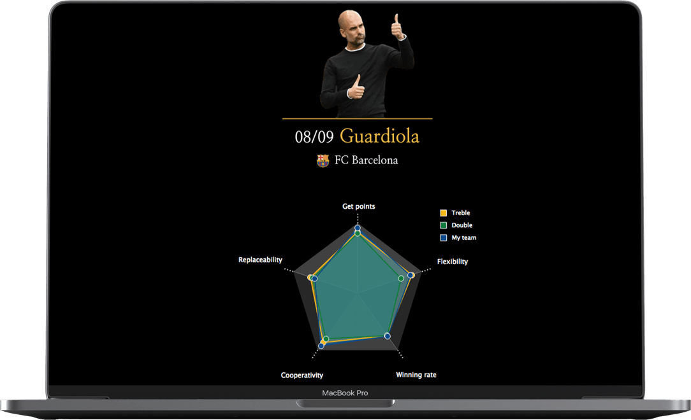
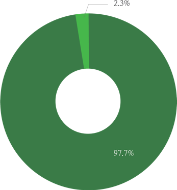
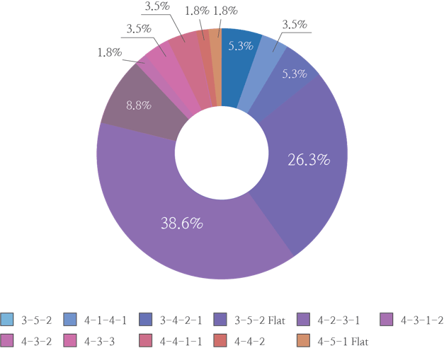

What Makes a Treble Team in Football?
1. Treble
What makes a Treble Team?
This data visualization project analyzes football manager’s statistics in order to find a common point between treble teams. It compares with double teams as well, analyzing what makes the difference between the two teams.
Treble is achieved when a club wins three trophies (club’s national league, main national cup, continental trophy) in a single season.
Double is achieved when a club wins only two of the three trophies that treble teams win.
2. Double
https://treble-in-ybigta.github.io/conference/
Project
Information
Information
Results
00. Project Goal
01. Data Used
02. Pentagon
Graph
Graph
Manager’s basic statistics in 5 standards
03. Pie Graph
Formation that manager uses mainly
05. Presentation
Final Presentation at YBIGTA Conference in Yonsei University
matches before 2011
matches after 2011

Winning a
Game
Game
Double Teams
Treble Teams
Football Data Visualization
Data Visualization
Category
2018. 12. 01 - 12. 28
Duration
Junseong Park, Siwook Lee, Seo
jin Yoon, Jihyeon Seo, Jaewon Ryu
jin Yoon, Jihyeon Seo, Jaewon Ryu
Team
Data Design, Project Manager
My Role
HTML, CSS, Javascript, Python
Used Tools
5 Treble Teams in UEFA from 1998 to 2018
Ferguson (98)
Guardiola (08)
Mourinho (08)
Heynkes (12)
Enrike (12)
24 Double Teams in UEFA from 1998 to 2018
Ancelotti (02) Wenger (01) Zidane (16) Rijkaard (05) Di Matteo (11) and many more..
This data visualization project analyzes football manager’s leadership and their characteristics in planning a match’s strategy in treble teams. Comparing the results with double football teams, it analyzes the slightest difference in making a football team a double or a treble winner.
Currently, there are various results that analyze football player’s statistics with their match data but not a lot with manager’s statistics. Our team had to set new standards that will measure a football manger’s role and their leadership.
Currently, there are various results that analyze football player’s statistics with their match data but not a lot with manager’s statistics. Our team had to set new standards that will measure a football manger’s role and their leadership.
What makes the slightest difference between treble and double teams?
Manager’s insights in analyzing a game
A talented football manager should analyze the entire game and decide which players to substitute or not depending on their team’s play. This illustrates how a manager decided to substitute a right player, in the right timing.
* Data are crawled from transfermarkt.com
* Differences in data are due to different record methods.
each match results
used
formation
formation
each match results
used
formation
formation
detailed
match results
match results
player substitution
record
record
total goal points,
goal scorer,
goal assistant
goal scorer,
goal assistant
main tactic used
in the match
in the match
yellow card, foul,
ball possession, win,
draw, loss
ball possession, win,
draw, loss
substitute player,
player’s position,
substituted time
player’s position,
substituted time
Get points
the number of goals the team scored.
shows the most basic but the most important
standard in evaluating a game
shows the most basic but the most important
standard in evaluating a game
how diverse players scored a goal.
shows how the team doesn’t rely on a particular player
who has outstanding performance than others
shows how the team doesn’t rely on a particular player
who has outstanding performance than others
calculated with each player’s number of hours played.
shows how diverse players a manager use
shows how diverse players a manager use
calculated with the number of passes done among players.
shows how players cooperate with each other
shows how players cooperate with each other
the percentage that a team will win a game
based on past results
based on past results
Replaceability
Flexibility
Cooperativity
Winning Rate



game start
substitute
stricker
stricker
our team’s goal
[Attack Points]
game start
substitute
defender
defender
other team’s goal
[Defence Points]
Website